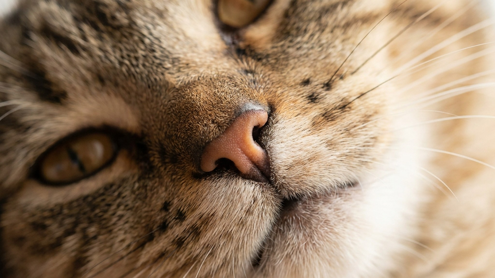

Гладите кошку, она мурчит — и вдруг замечаете влажное пятно на джинсах. Многие хозяева пугаются и первым делом ищут «что-то плохое». Чаще всего это рефлекс из котячьего детства: кошка настолько расслаблена, что тело вспоминает кормление материнским молоком. Ниже — откуда берётся такое поведение, у каких кошек встречается чаще, и когда всё-таки стоит показать питомца ветеринару.
🐾 Хотите понять, что кошка говорит вам?
Опишите ситуацию или пришлите видео в AnimaLife — AI разберёт поведение вашего питомца и подскажет, что делать. Бесплатно, ответ за минуту.
Разобрать поведение → Разобрать в MAX →
У вас iPhone? AnimaLife есть в App Store
Котята стимулируют выработку молока у матери топтанием лапами и мурлыканьем. В этот момент у котёнка усиливается слюноотделение — организм готовится к еде. Часть кошек сохраняет эту связку во взрослом возрасте: глубокое расслабление, мурлыканье и ласка запускают тот же рефлекс.
Это признак доверия, а не тревоги. Кошка чувствует себя в безопасности настолько, что тело буквально переходит в режим «я у мамы».
Не все кошки пускают слюни при ласке — это индивидуальная особенность, а не признак породы или возраста. Чаще встречается у кошек, которых рано отняли от матери или которых с детства много держали на руках. Также это нередко у кошек с выраженной привязанностью к конкретному человеку — реакция возникает именно на «своего».
Слюни во время ласки — норма. Насторожиться стоит, если картина меняется:
Эти сигналы — повод показать кошку ветеринару. Не срочно, но в течение нескольких дней. Состояние полости рта у кошек меняется постепенно, и профилактический осмотр раз в год помогает держать это под контролем.
Если кошка пускает слюни только во время ласки и чувствует себя хорошо — ничего особенного делать не нужно. Держите под рукой небольшое полотенце или влажную салфетку. Не отталкивайте кошку и не меняйте резко поведение — она демонстрирует высший уровень доверия.
Раз в год стоит обсудить с ветеринаром состояние полости рта — это стандартная профилактика для любой кошки, независимо от слюнотечения. Чистка зубов или профессиональная гигиена в клинике — решение принимает врач после осмотра.
Материал носит информационный характер и не заменяет очную консультацию ветеринара.
🐾 У вашей кошки так же?
Расскажите в AnimaLife, как ведёт себя ваш питомец, — приложение объяснит причину и даст пошаговый план. Бесплатно, без записи к специалисту.
Разобрать свой случай → Разобрать в MAX →
У вас iPhone? AnimaLife есть в App Store
🐾 Понравился разбор?
Подпишитесь на канал — каждый день разбираем по одному тревожному симптому у кошек и собак: что в пределах нормы, а когда пора к врачу. Подпишитесь, чтобы не пропустить разбор, который может спасти здоровье вашего питомца.